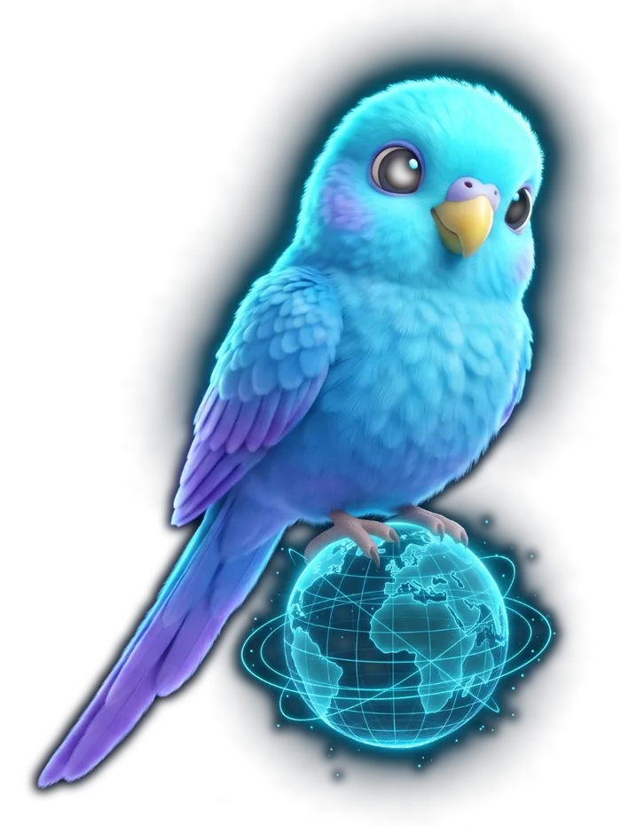

Atlas, c'est mon chef d'orchestre : je lui confie une mission, il la découpe en tâches et répartit le travail entre plusieurs agents IA, sur ma propre machine.
On ne jongle plus entre dix fenêtres d'IA. Je parle à un seul chef d'orchestre, il s'occupe du reste.
En français, comme à un collègue.
Il propose un plan, je le valide, il découpe en tâches.
Chaque tâche part chez l'agent le plus adapté, en parallèle.
Rien n'est validé sans mon accord.
Une vraie équipe d'agents, avec les bons outils.
Claude, et des dizaines d'autres modèles via OpenRouter : le bon modèle pour chaque tâche, sans exploser le budget.
Chaque tâche avance sous mes yeux : à faire, en cours, à relire, terminé.
Des savoir-faire prêts à l'emploi : lire des flux d'actualité, planifier des publications, produire des documents…
Les agents consultent le web pour chercher et vérifier l'information.
Atlas retient le contexte et lance des tâches automatiquement, même la nuit.
Tout tourne sur ma propre machine, avec mes propres clés. Je garde le contrôle de mes données.
Voilà à quoi ressemble une mission : les tâches passent d'une colonne à l'autre pendant que les agents avancent.
« L'IA ne remplace pas le travail : elle se met au service de quelqu'un qui sait ce qu'il veut. »